This guide covers all of Midnight Inscription. You'll find every weekly and one-time Knowledge source (with coordinates, TomTom commands, and check macros), profession equipment, renown-gated recipes, and full recipe lists for weapons, Darkmoon cards, contracts, treatises, missives, reagents, and House Decor.
If you need help leveling Inscription from 1 to 100, check out my leveling guide:
Midnight Inscription Leveling Guide
Midnight Inscription Changes
These are the notable Inscription changes in Midnight. If you played The War Within, most of the system is the same, so this section focuses on what is different.
- Artisan Scribe's Moxie - The BoP currency
 Artisan's Acuity that you got from earning profession Knowledge in The War Within has been changed to a profession-specific currency,
Artisan's Acuity that you got from earning profession Knowledge in The War Within has been changed to a profession-specific currency, 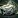
Artisan Scribe's Moxie. You can now only use it for Inscription-specific recipes. - No More Bronze Quality Reagents - Bronze-quality reagents and consumables have been removed in Midnight. All reagents and consumables now only have two quality levels: Silver and Gold. This means you will always get at least a Silver-quality item, and you can use your Concentration right away to craft Gold-quality items. Weapons, profession equipment, and Darkmoon trinkets still have 5 ranks.
- Epic Profession Tools - New Epic-quality profession tools are available in Midnight, providing more secondary stats than Rare tools. Both Epic and Rare tools provide the same base Skill bonus.
- Bows - Inscription can now craft bows, giving hunters an alternative to Engineering, which was the only profession that could craft ranged weapons in The War Within.
- Darkmoon Card Crafting - In The War Within, Darkmoon cards only dropped from mobs. In Midnight, crafting is back. You create individual cards through the new Darkmoon Curiosity specialization, collect all 8 of a suit into a deck, and craft a Darkmoon Dominion trinket (ilvl 220, 5 ranks) from it. Each suit also has a matching Darkmoon Sigil embellishment.
Weekly Inscription Knowledge in Midnight
In Midnight, there are four weekly sources of profession Knowledge, giving you 20-25 Knowledge Points per week. But this is only an estimate, because Patron Orders require crafting specific items at high quality, so your actual weekly total will be lower if you don't have the recipe or can't hit the quality target.
| Source | Details |
|---|---|
| Patron Crafting Orders (~24 KP) | Patron orders are the main source of Knowledge Points. You will receive multiple orders throughout the week. Some of them will reward you with Glimmer of Midnight Inscription Knowledge, but not all orders give Knowledge Points. |
| Weekly Quest (2 KP) | Your profession trainer will offer a weekly quest that asks you to complete 3 Crafting Orders. This rewards a Thalassian Scribe's Journal worth 2 Knowledge Points and resets every week. |
| Weekly Drops (4 KP) | Each week, you can loot 1 of each of the following items from treasures scattered around the new zones: Brilliant Phoenix Ink and 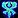 Loa-Blessed Rune. |
| Inscription Treatise (1-2 KP) | Inscribers craft Thalassian Treatises for every profession, and can use 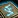 Thalassian Treatise on Inscription weekly for 1 Knowledge Point. These are bind-on-pickup (BoP) but Warbound, so you can craft extras and send them to alts. If you fully unlock the Calm Hands specialization, you earn an additional Knowledge Point from your treatise (2 KP total). |
| Darkmoon Faire (3 KP / month) | Once a month, the Darkmoon Faire comes to town and you can complete a quick profession quest for +3 Knowledge Points and +2 Profession Skill. It's not a weekly source, but don't skip it. The Faire starts on the Sunday before the first Monday of each month. |
| Catch-up System | If you fall behind or start late, you will receive Flicker of Midnight Inscription Knowledge instead of Glimmer of Midnight Inscription Knowledge from Patron Orders. Flickers give more Knowledge Points than Glimmers, so you will catch up quickly. Once you are caught up, you will start receiving Glimmers again. |
One-Time Inscription Knowledge in Midnight
These are one-time sources of Inscription Knowledge Points. Once you collect them, they are gone forever on that character.
Renown Knowledge Book
Traditions of the Haranir: Inscription is sold by the Haranir Renown Quartermaster.
Midnight Inscription Treasures
There are 8 Inscription treasures scattered across the Midnight zones. Each one gives 3 Knowledge Points, for a total of 24 extra points. One treasure location has not been found yet on beta.
| Treasure | Zone | Map |
|---|---|---|
| Songwriter's Pen | Silvermoon City | |
| Songwriter's Quill | Eversong Woods | |
| Spare Ink | Eversong Woods | |
| Leather-Bound Techniques | Zul'Aman | |
| Leftover Sanguithorn Pigment | Harandar | |
| Intrepid Explorer's Marker | Harandar | |
| Void-Touched Quill | Voidstorm | |
| Half-Baked Techniques | Location not found yet |
TomTom Waypoints & Treasure Check Macro
TomTom Waypoints
/ttpaste in-game/way #2393 47.7, 50.4 Songwriter's Pen /way #2395 40.3, 61.2 Songwriter's Quill /way #2395 48.3, 75.6 Spare Ink /way #2437 40.5, 49.4 Leather-Bound Techniques /way #2413 52.7, 50.0 Leftover Sanguithorn Pigment /way #2413 52.4, 52.6 Intrepid Explorer's Marker /way #2444 60.7, 84.3 Void-Touched Quill
Treasure Check Macro
true = collectedInscription Specializations
There are four specialization trees available. You unlock access to them at Inscription skill levels 25, 50, 60, and 75.
- Blueprints - Staves, bows, and off-hands for players, plus profession tools for Alchemy, Cooking, and Inscription.
- Calm Hands - Crafting stats (Multicraft, Resourcefulness, Ingenuity), plus a bonus Knowledge Point from your weekly Treatise.
- Perfected Products - Quality improvements for milling, inks, ciphers, missives, contracts, and vantus runes.
- Darkmoon Curiosity - Darkmoon cards, trinkets, and sigil embellishments for all four suits (Blood, Hunt, Rot, Void).
I have a separate guide that walks through the best builds for each playstyle with step-by-step Knowledge Point allocation.
Midnight Inscription Specialization Guide & Best Builds
Profession Equipment
Epic profession tools are new in Midnight. In The War Within, professions only had Green and Rare tools. Epic tools give the same Skill as Rare, but have higher secondary stats like Resourcefulness, Multicraft, and Ingenuity.
Profession Gear for Scribes
To fully gear your Scribe you need items from 2 professions. Your tool (Quill) is crafted by Inscription itself, and both accessories (Spectacles and Magnifying Glass) come from Jewelcrafting.
| Slot | Crafted By | Green Quality | Blue Quality | Epic Quality |
|---|---|---|---|---|
| Tool | Inscription | Hobbyist Scribe's Quill | 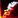 Sin'dorei Quill |
Gilded Sin'dorei Quill |
| Accessory | Jewelcrafting | Bold Biographer's Bifocals | Sin'dorei Scribe's Spectacles | Flawless Text Scrutinizers |
| Accessory | Jewelcrafting | Fantastic Font Focuser | Improved Right-Handed Magnifying Glass | Thalassian Scribe's Crystalline Lens |
Green tools are learned from the trainer. Blue tools come from the Blueprints specialization. Epic tool recipes are sold by Lelorian in Silvermoon City for 150 Artisan Scribe's Moxie each.
Consider having two tools. Milling does not benefit from Multicraft, but almost everything else does. If you want to min-max your profits, keep a Resourcefulness tool for milling and a Multicraft tool for crafting inks, reagents, missives, and everything else. Swap between them depending on what you're doing.
Craftable Profession Equipment
Inscription crafts tools for 3 professions including itself. Here are all the profession tools you can make for other players.
| Profession | Green Quality | Blue Quality | Epic Quality |
|---|---|---|---|
| Alchemy | Hobbyist Alchemist's Mixing Rod | 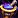 Sin'dorei Alchemist's Mixing Rod |
Gilded Alchemist's Mixing Rod |
| Cooking | Sin'dorei Rolling Pin | Gilded Sin'dorei Rolling Pin | |
| Inscription | Hobbyist Scribe's Quill | Sin'dorei Quill | Gilded Sin'dorei Quill |
Renown Recipes
Several Inscription recipes are sold by Renown vendors, including faction Contracts and House Decor items. All require Renown Rank 5 with the corresponding faction. Contracts give bonus reputation from World Quests.
| Recipe | Description | Faction | Vendor |
|---|---|---|---|
| Contract: The Amani Tribe | +Rep from World Quests | Amani Tribe (Rank 5) | Magovu |
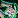 Contract: The Hara'ti |
+Rep from World Quests | Hara'ti (Rank 5) | Naynar |
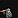 Harandar Signpost |
House Decor | Hara'ti (Rank 5) | Naynar |
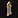 Magnificent Towering Bookcase |
House Decor | Hara'ti (Rank 5) | Naynar |
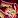 Contract: The Silvermoon Court |
+Rep from World Quests | Silvermoon Court (Rank 5) | Caeris Fairdawn |
| Contract: The Singularity | +Rep from World Quests | The Singularity (Rank 5) | Void Researcher Anomander |
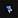 Floating Void-Touched Tome |
House Decor | The Singularity (Rank 5) | Void Researcher Anomander |
Weapons
Inscription crafts staves, off-hands, and bows. Rare weapons are learned from the trainer. Epic weapons are unlocked through the Blueprints specialization.
| Recipe | Type | Source |
|---|---|---|
| Aln'hara Cane | Staff | Spec: Blueprints |
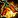 Aln'hara Lantern |
Off-Hand | Spec: Blueprints |
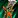 Aln'hara Pikestaff |
Staff | Spec: Blueprints |
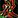 Aln'hara Sprigshot |
Bow | Spec: Blueprints |
| Faunatender's Baton | Staff | Trainer (20) |
| Faunatender's Trust | Bow | Trainer (35) |
| Floratender's Crutch | Staff | Trainer (20) |
| Rootwarden's Lamp | Off-Hand | Trainer (20) |
Competitor's Weapons (PvP)
These PvP weapons and trinkets are sold by Mirvedon in Silvermoon City.
| Recipe | Type | Source |
|---|---|---|
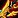 Thalassian Competitor's Bow |
Bow | Vendor: Mirvedon (Silvermoon City) |
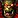 Thalassian Competitor's Emblem |
Trinket | Vendor: Mirvedon (Silvermoon City) |
| Thalassian Competitor's Insignia of Alacrity | Trinket | Vendor: Mirvedon (Silvermoon City) |
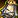 Thalassian Competitor's Lamp |
Off-Hand | Vendor: Mirvedon (Silvermoon City) |
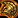 Thalassian Competitor's Medallion |
Trinket | Vendor: Mirvedon (Silvermoon City) |
| Thalassian Competitor's Pillar | Polearm | Vendor: Mirvedon (Silvermoon City) |
| Thalassian Competitor's Staff | Staff | Vendor: Mirvedon (Silvermoon City) |
Darkmoon Cards
Darkmoon cards are one of Inscription's signature products. In The War Within, cards only dropped from mobs and were exclusive to Scribes. In Midnight, crafting is back. You create individual cards through the Darkmoon Curiosity specialization, collect all 8 cards of a suit, and combine them into a deck that becomes a trinket.
How It Works
There are four suits: Blood, Hunt, Rot, and Void. Each suit has 8 cards and its own set of crafting recipes from the Darkmoon Curiosity spec. The flow is:
Craft Cards → Collect 8 into a Deck → Use Deck to Craft Trinket
Inscribe
Each suit has an Inscribe recipe (e.g. Inscribe: Blood) that creates a random card from that suit. You can use Munsell Ink, Sienna Ink or Thalassian Essence of the Faire as the reagent.
Transcribe
Each suit also has a Transcribe recipe (e.g. Transcribe: Blood) that swaps an existing card for a different random one from the same suit. This costs an Essence, so use it to target the specific card you are missing.
Both cards and Thalassian Essence of the Faire also drop from world content for all players, not just Scribes. Once you have all 8 cards of a suit, click them to combine into a deck. The deck itself is a usable trinket at a lower item level, so anyone can equip it right away.
Darkmoon Dominion Trinkets
A Scribe can upgrade the deck into a Darkmoon Dominion trinket (ilvl 220, 5 ranks). If you're a Scribe, you craft it yourself. Non-Scribes can send their deck to a Scribe through a crafting order. All recipes come from the Darkmoon Curiosity specialization.
| Recipe | Source |
|---|---|
| Darkmoon Dominion: Blood | Spec: Darkmoon Curiosity |
| Darkmoon Dominion: Hunt | Spec: Darkmoon Curiosity |
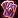 Darkmoon Dominion: Rot |
Spec: Darkmoon Curiosity |
| Darkmoon Dominion: Void | Spec: Darkmoon Curiosity |
Darkmoon Sigils (Embellishments)
Darkmoon Sigils are optional reagents that add embellishment effects to crafted gear. They require a full deck to craft. You can wear up to 2 embellished items at a time.
| Recipe | Source |
|---|---|
| Darkmoon Sigil: Blood | Spec: Darkmoon Curiosity |
| Darkmoon Sigil: Hunt | Spec: Darkmoon Curiosity |
| Darkmoon Sigil: Rot | Spec: Darkmoon Curiosity |
| Darkmoon Sigil: Void | Spec: Darkmoon Curiosity |
Contracts
Contracts give bonus reputation with a faction every time you complete a World Quest in Midnight zones. You can only sign one contract per week, and the effect is shared across your Warband. All contract recipes are learned from Renown vendors at Rank 5.
| Recipe | Faction | Vendor |
|---|---|---|
| Contract: The Amani Tribe | Amani Tribe (Rank 5) | Magovu (Zul'Aman) |
| Contract: The Hara'ti | Hara'ti (Rank 5) | Naynar (Harandar) |
| Contract: The Silvermoon Court | Silvermoon Court (Rank 5) | Caeris Fairdawn (Eversong Woods) |
| Contract: The Singularity | The Singularity (Rank 5) | Void Researcher Anomander (Voidstorm) |
Treatises
Treatises are weekly Knowledge Point items for every profession. You craft the Inscription treatise from the Calm Hands specialization, and discover the others while crafting any treatise.
Profession Treatises
| Recipe | Source |
|---|---|
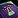 Thalassian Treatise on Alchemy |
Discovery: Crafting Thalassian Treatises |
| Thalassian Treatise on Blacksmithing | Discovery: Crafting Thalassian Treatises |
| Thalassian Treatise on Enchanting | Discovery: Crafting Thalassian Treatises |
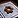 Thalassian Treatise on Engineering |
Discovery: Crafting Thalassian Treatises |
| Thalassian Treatise on Herbalism | Discovery: Crafting Thalassian Treatises |
| Thalassian Treatise on Inscription | Spec: Calm Hands |
| Thalassian Treatise on Jewelcrafting | Discovery: Crafting Thalassian Treatises |
| Thalassian Treatise on Leatherworking | Discovery: Crafting Thalassian Treatises |
| Thalassian Treatise on Mining | Discovery: Crafting Thalassian Treatises |
| Thalassian Treatise on Skinning | Discovery: Crafting Thalassian Treatises |
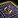 Thalassian Treatise on Tailoring |
Discovery: Crafting Thalassian Treatises |
Missives
Missives are optional reagents used in crafting to choose specific secondary stats on gear and profession equipment. Combat stat missives go on weapons and armor, while profession stat missives go on profession tools and accessories.
Combat Stats
| Recipe | Stats | Source |
|---|---|---|
| Thalassian Missive of the Aurora | Crit + Versatility | Trainer (25) |
| Thalassian Missive of the Feverflare | Haste + Mastery | Trainer (25) |
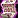 Thalassian Missive of the Fireflash |
Crit + Haste | Trainer (35) |
| Thalassian Missive of the Harmonious | Mastery + Versatility | Trainer (35) |
| Thalassian Missive of the Peerless | Crit + Mastery | Trainer (45) |
| Thalassian Missive of the Quickblade | Haste + Versatility | Trainer (45) |
Profession Stats
| Recipe | Source |
|---|---|
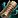 Thalassian Missive of Crafting Speed |
Vendor: Lelorian (Silvermoon City) |
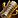 Thalassian Missive of Deftness |
Vendor: Lelorian (Silvermoon City) |
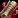 Thalassian Missive of Finesse |
Vendor: Lelorian (Silvermoon City) |
| Thalassian Missive of Ingenuity | Vendor: Lelorian (Silvermoon City) |
| Thalassian Missive of Multicraft | Vendor: Lelorian (Silvermoon City) |
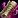 Thalassian Missive of Perception |
Vendor: Lelorian (Silvermoon City) |
| Thalassian Missive of Resourcefulness | Vendor: Lelorian (Silvermoon City) |
Reagents & Consumables
These are the inks, pigments, and other crafting materials that Inscription produces. You also get Vantus Runes for raid content and Midnight Milling to process herbs.
Reagents
| Recipe | Source |
|---|---|
| Trainer (25) | |
| Munsell Ink | Trainer (15) |
| Sienna Ink | Trainer (10) |
| Soul Cipher | Trainer (20) |
Vantus Rune
| Recipe | Source |
|---|---|
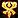 Vantus Rune: Radiant |
Trainer (50) |
House Decor
Inscription crafts various furniture and decorations for player housing. These recipes come from different vendors and sources across the Midnight zones.
| Recipe | Source |
|---|---|
| Floating Void-Touched Tome | Vendor: Void Researcher Anomander (Voidstorm) |
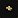 Gilded Eversong Book |
Vendor: Lelorian (Silvermoon City) |
| Harandar Signpost | Vendor: Naynar (Harandar) |
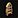 Homely Sin'dorei Shelf |
Vendor: Lelorian (Silvermoon City) |
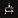 Homely Wall Shelves |
Trainer (1) |
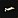 Lively Songwriter's Quill |
Vendor: Lelorian (Silvermoon City) |
| Magnificent Towering Bookcase | Vendor: Naynar (Harandar) |
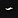 Opened Sin'dorei Scroll |
Vendor: Lelorian (Silvermoon City) |
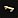 Restful Bronze Bench |
Drop: Victorious Stormarion Pinnacle Cache |
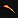 Sin'dorei Phoenix Quill |
Vendor: Ranger Allorn (Eversong Woods) |
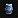 Sturdy Ren'dorei Cask |
Vendor: Construct V'anore (Silvermoon City) |
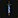 Wild Hanging Scroll |
Vendor: Construct V'anore (Silvermoon City) |